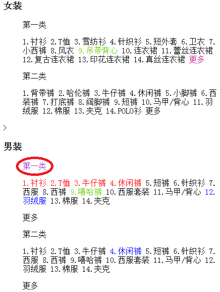

效果图

这是一个综合的案例，主要就是展示选择器的使用，案例中的选择器是相对比较复杂的，很多时候我们不需要写这么复杂的选择器，但是案例是为了展示整个选择器的知识点的运用
右边是一段文本，我们通过不同的选择器给指定的文字赋予颜色
分析一段复杂的选择器：
$("#menu_con div.tag dd > p:first-child")
这段组合的选择器表达式用到了几个之前学到的选择器：ID、Class、元素、层级、子元素筛选器
当用到筛选器 :first-child的时候我们就知道了，这肯定是一组合集，意味着p元素是有多个，而且是分布在不同父元素dd里面的
这个选择器其实挺复杂的，现实的开发中，我们应该要避免出现这么冗余繁琐的选择器，可以最简单的在a元素的父元素上加一个id，或者class直接定位即可。当然这样的处理可能无形中可能要多出一个无意义的属性了
PS：本节主要是对选择器使用的练习，有其他需后期学到的知识提前出现，童鞋们可以酌情去研究和思考。